In this project, I implemented several core algorithms for geometric modeling and mesh processing. First, I used de Casteljau’s algorithm to evaluate Bézier curves and extended it to compute points on Bézier surfaces through repeated linear interpolation of control points.
Next, I worked with triangle meshes using the half-edge data structure. I implemented area-weighted vertex normals for smooth shading and developed local mesh operations including edge flips and edge splits, carefully updating mesh connectivity to maintain a valid structure.
Finally, I implemented Loop subdivision to upsample meshes and produce smoother surfaces. This process involves computing new vertex positions, splitting edges, flipping specific edges, and updating vertex positions. Through this implementation, I observed how subdivision smooths sharp features and how mesh connectivity can influence the symmetry of the resulting surface.
Section I: Bezier Curves and Surfaces
Part 1: Bezier curves with 1D de Casteljau subdivision
What is de Casteljau's algorithm?: De Casteljau's algorithm is a recursive method to evaluate the Bezier curve. Given a parameter t, we run successive linear interpolations between consecutive control points to
compute the intermediate points. This would produce a new set of control points -- each lies on an edge in the original Bezier curve. We repeat this process recursively until there's only
one control point, and this control point is guaranteed to lie on the Bezier curve at parameter t.
My implementation: I performed one subdivision step per call to evaluateStep() by looping through all consecutive point pairs in the given Vector2D array of control points.
I stored the intermediate control points in a new vector2D array called control_points using push_back() in each iteration. Recursive call to evaluateStep() is basicallly
the de Casteljau's algorithm until one single point is obtained.
Here is an example of how de Casteljau's algorithm runs
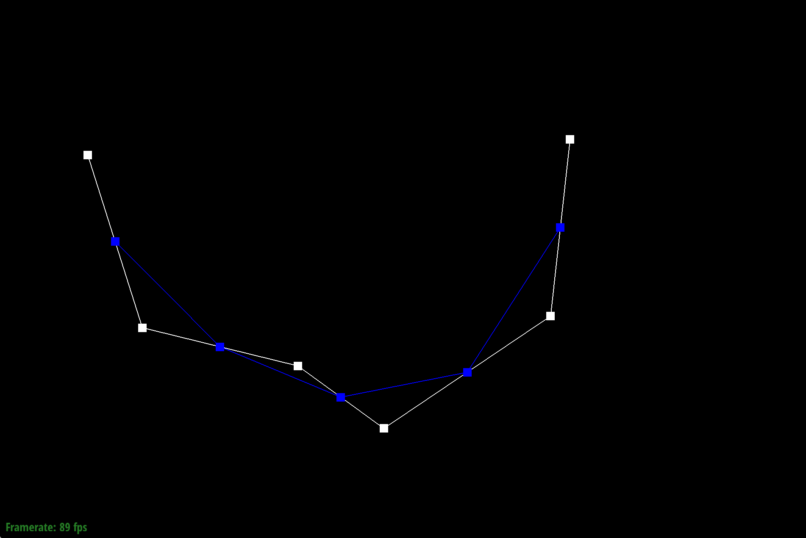
Level 1
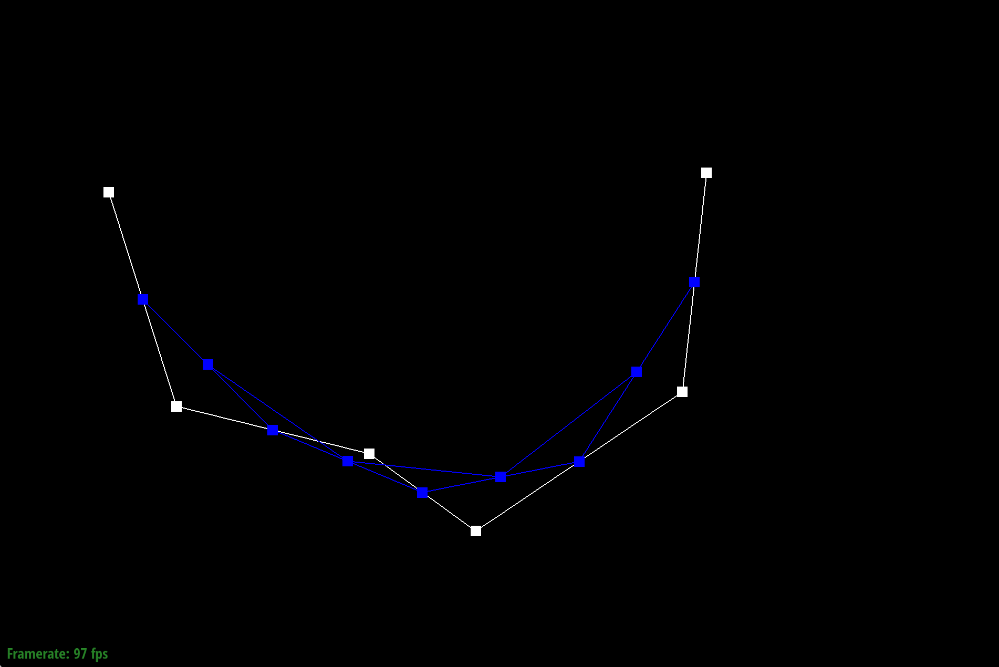
Level 2
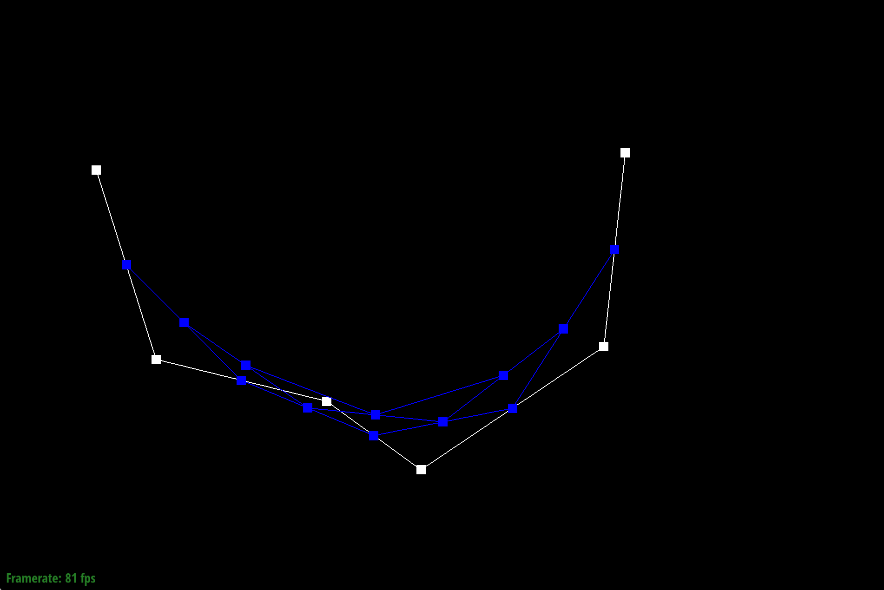
Level 3
Level 4
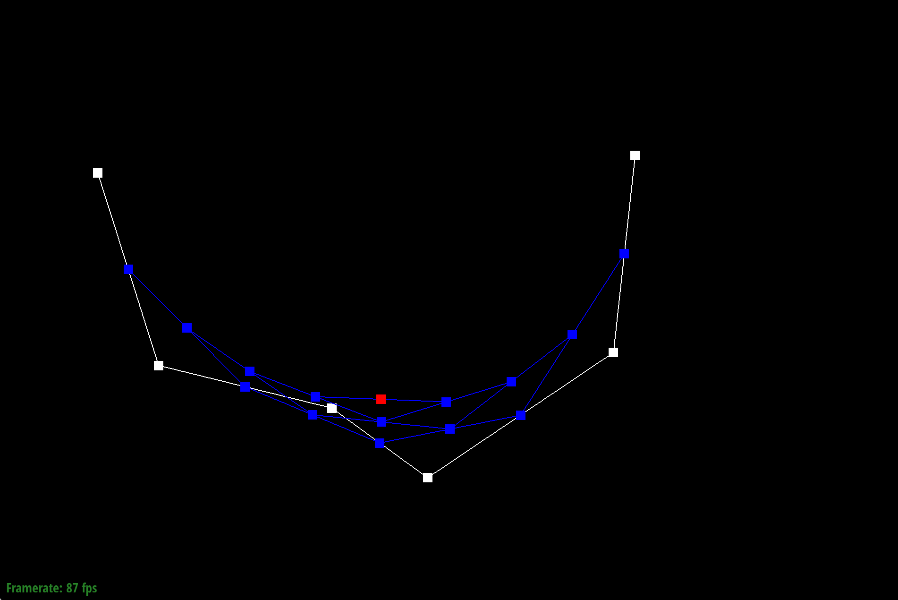
Level 5 (obtained one control point)
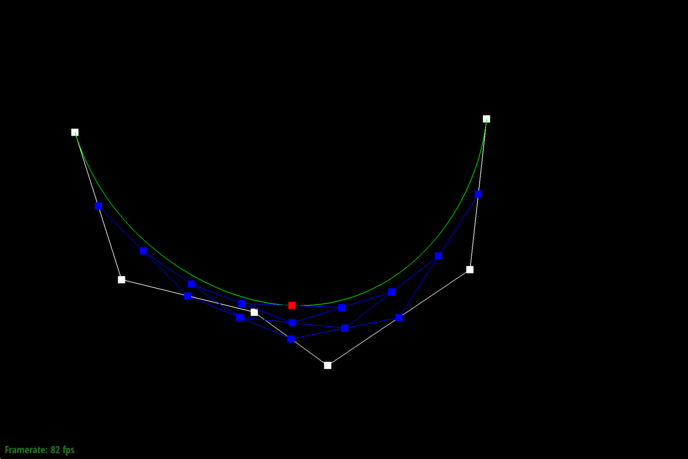
Bezier curve
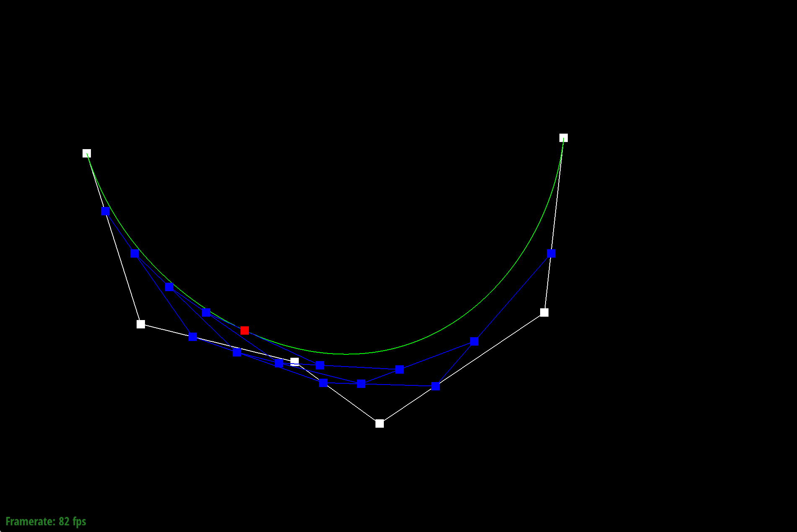
Bezier curve with the same control points but different parameter t
Part 2: Bezier surfaces with separable 1D de Casteljau
To evaluate a surface point at parameters (u,v), I treat each row of control points as defining a Bezier curve in the u-direction. Using the linear interpolation,
I obtain a single control point for each row -- in total n intermediate points. These intermediate points then define a new Bezier curve in the v-direction. Thus,
I perform de Casteljau's algorithm again to get the final point by running linear interpolation on this n intermediate points with parameter v.
My implementation: I reused the evaluateStep() for Bezier curve from part 1 but changed the 2D vector to 3D vector. I then implemented
evaluate1D(), where I iteratively called evaluateStep() until one single control point was obtained, the point that would lie on the Bezier curve.
Finally, in evaluate(), I ran de Casteljau's algorithm separately on two directions to obtain the final control point that would lie on the Bezier surface.
The teapot evaluated by my implementation is shown below:
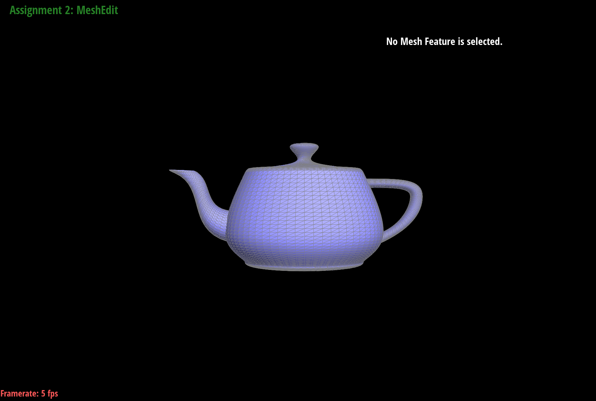
teapot evaluated by de Casteljau's algorithm
Section II: Triangle Meshes and Half-Edge Data Structure
Part 3: Area-weighted vertex normals
Implementation: I start at vertex's halfedge(), and loop around all faces incident to the starting vertex by calling h = h->twin()->next() until we traverse back to the starting halfedge.
For each incident face (triangle), I fetch the Vector3D coordinates of the three vertices by:
p0 = h->vertex()->position
p1 = h->next()->vertex()->position
p2 = h->next()->next()->vertex()->position
I then compute the normal at that given vertex by taking the cross product of (p1 - p0) and (p2 - p0), and add it to the sum of normals. Finally, I return the normalized sum of
all area-weighted normals for the Phone shading, which gives more weight to triangles with larger areas to avoid skinny triangles disproportionately affecting the vertex normal.
Phong shading makes the object shading and lighting look smoother and more realistic, as demonstrated in the figures below.
Teapot with phong shading
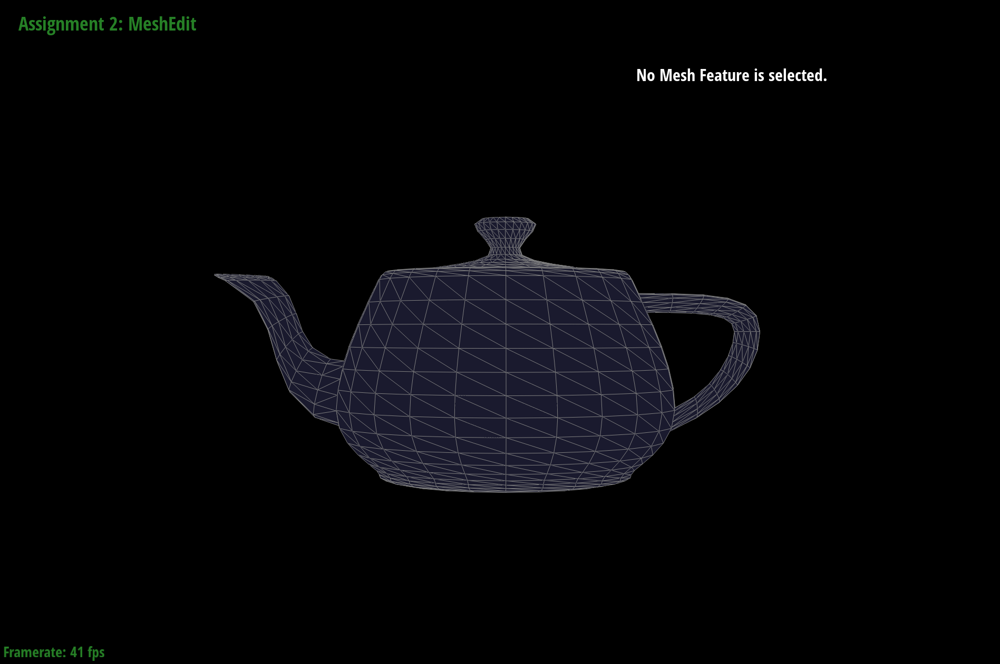
Teapot without phong shading
Part 4: Edge flip
Implementation: I first identified every element in the mesh, including halfedge, face, vertex, and edge. I start from the halfedge (h0) on the edge that needs to be flipped,
and then identified all elements in the neighboring meshes by first identifying all related halfedges, and then calling h->vertex(), h->face(), and h->edge() respectively.
Then, for each vertex, face, and edge, I reset their halfedge pointer after edge flip. Finally, for each halfedge, I reset their pointers by calling setNeighbors()
Debugging journey: I originally had a tiny bug in one of my setNeighbors() function, where I put the wrong new vertex pointer for a halfedge. My strategy for debugging is drawing out the two meshes on paper before and after the edge flip,
compare all pointers one by one carefully till I found out that I accidentally wrote vertex_d for vertex_b. 🥲
Below is an illustration of the teapot after some edge flips.
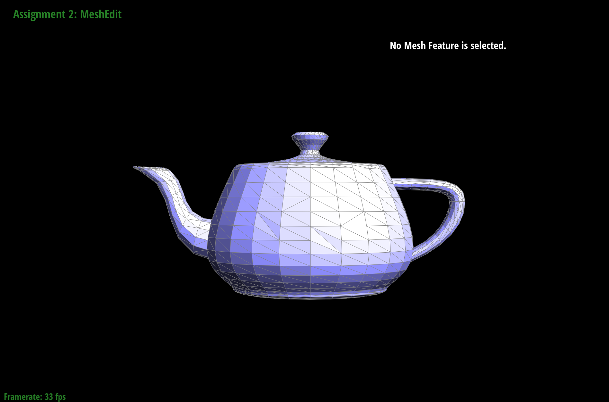
teapot with some edges flipped
Part 5: Edge split
Implementation: The overall strategy for implementing edge split is similar to that of edge flip. I first identified all the relevant mesh elements around the target edge, including the adjacent halfedges, vertices, edges, and faces.
Then I reassigned their pointers so that the connectivity reflects the new mesh configuration after the split.
The main difference from edge flip is that edge split introduces new mesh elements. Specifically, I created a new vertex m
at the midpoint of the original edge, along with several new halfedges and edges connecting this vertex to the surrounding vertices. For each of these newly created elements, I assigned the appropriate
next, twin, vertex, edge, face, halfedge pointers so that the halfedge structure remains consistent.
One implementation detail I used was reusing the original edge being split to represent one of the two edges created after the split (the lower half).
This avoids having to delete the original edge and simplifies the bookkeeping of mesh elements. The illustration of edge splits are attached below:
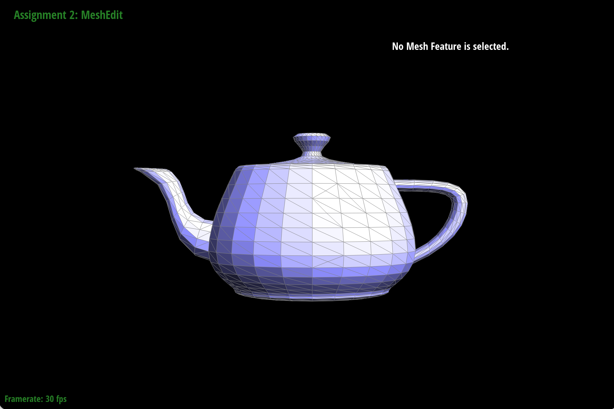
Teapot with edge splits only
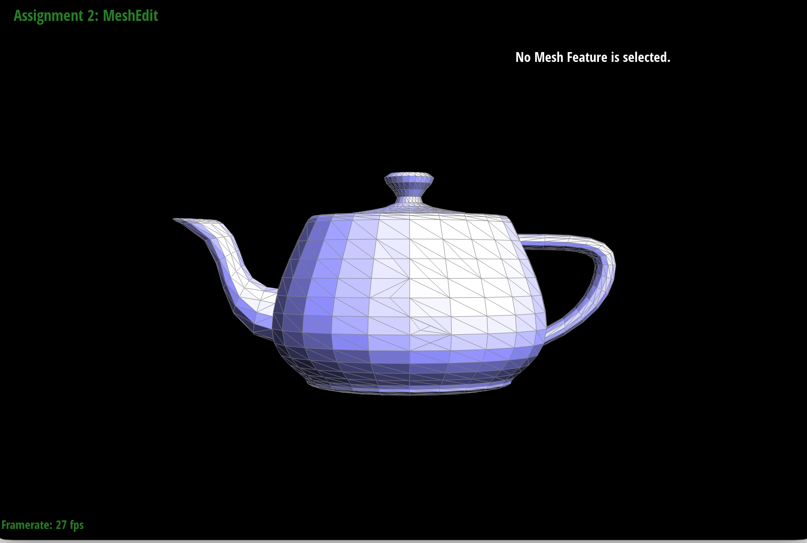
Teapot with both edge splits and edge flips
Part 6: Loop subdivision for mesh upsampling
Implementation: I implemented loop subdivision in the following steps:
Set all existing vertices and edges to "old".
Compute new positions for all vertices that will be created after edge splits using the given formula: v->newPosition = (1 - n * u) * v->position + u * neighbor_sum
n - the degree of the vertex
u - if n == 3, u = \(3/16\); else, u = \(3 / (8 * n)\)
neighbor_sum - sum of all neighboring vertices' positions by adding up h->twin()->vertex()->position in the loop where h = h->twin()->next()
Iterate over all edges and compute the position for all newly added vertex, storing the newPosition in edge->newPosition \[ 3/8 * (A->position + B->position) + 1/8 * (C->position + D->position) \]
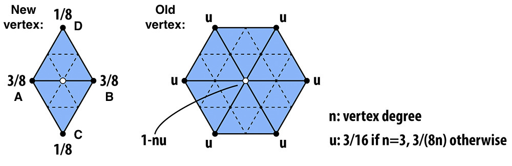
Left: position of new vertex splitting the shared edge (A,B); Right: position of old vertices
Split all edges in the original edge list.
Flip any new edges that connect an old and a new vertex - check whether edge.isNew = true and v1.isNew != v2.isNew.
Copy the vertex's newPosition into its final position.
After applying Loop subdivision, the sharp corners of the mesh become rounded and smoother, and the overall shape of the object becomes more continuous and well-defined, as shown in the first two figures below.
Pre-splitting edges can reduce this smoothing effect because it introduces additional vertices and edges, which helps preserve sharp features. In the third figure, several edges on the right side of the cow were split before applying Loop subdivision.
As a result, the right side appears noticeably less smooth than the left side.
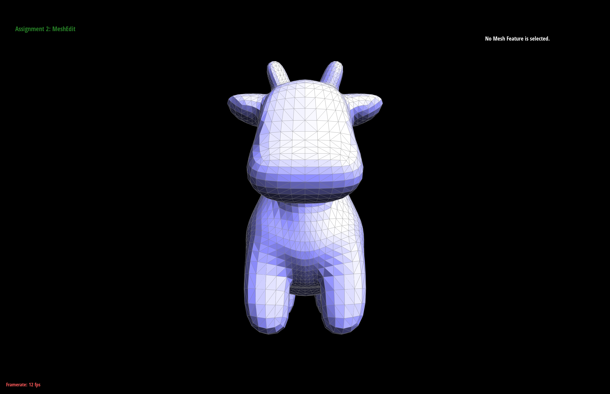
Original cow mesh
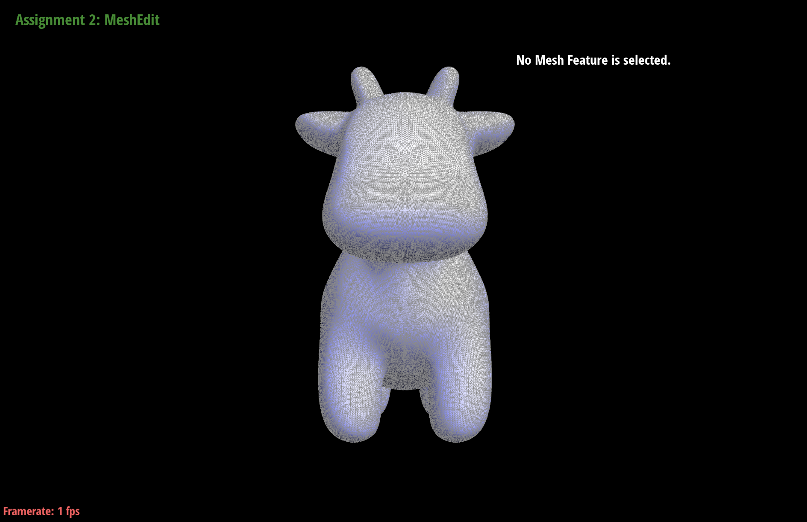
Cow mesh after four loop subdivisions
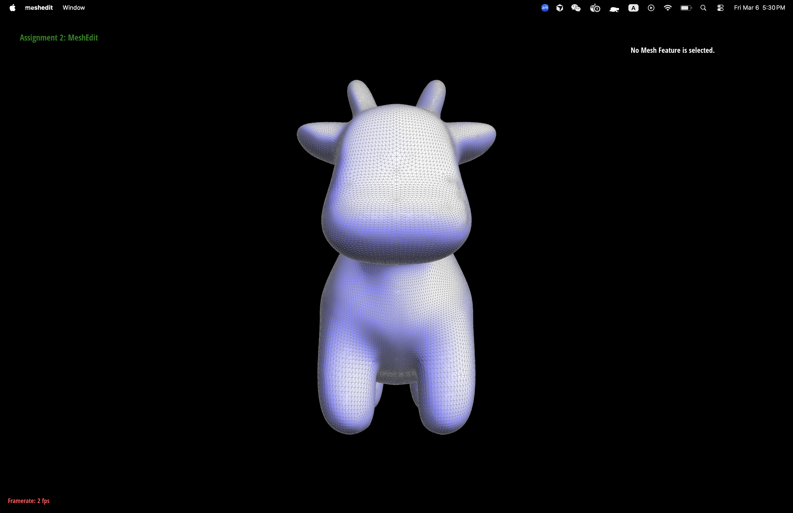
Cow mesh with edge pre-splitting on right face
The same smoothing behavior can also be observed on the cube mesh. As Loop subdivision is repeatedly applied, the cube becomes smoother, but it also starts to appear slightly asymmetric.
This occurs because the cube’s triangular mesh is not perfectly symmetric, even though the cube itself is geometrically symmetric.
As a result, the subdivision process propagates this imbalance. One way to mitigate this issue is to pre-process the mesh by splitting certain edges to produce a more balanced and symmetric triangulation.
The figures in the first row below show several iterations of Loop subdivision on the original cube, while the two figures in the second row demonstrate the result after performing edge splits beforehand, which leads to a more symmetric appearance after the same number of subdivisions.